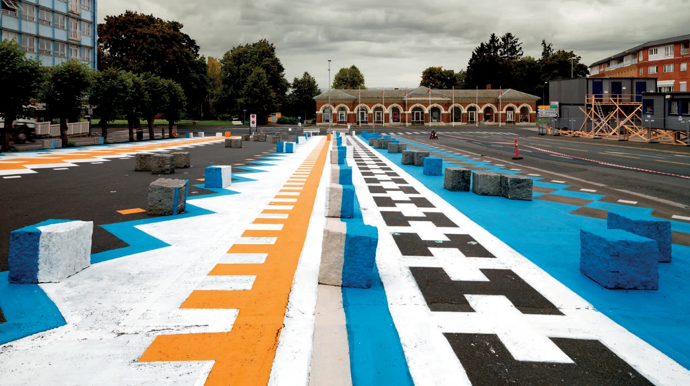
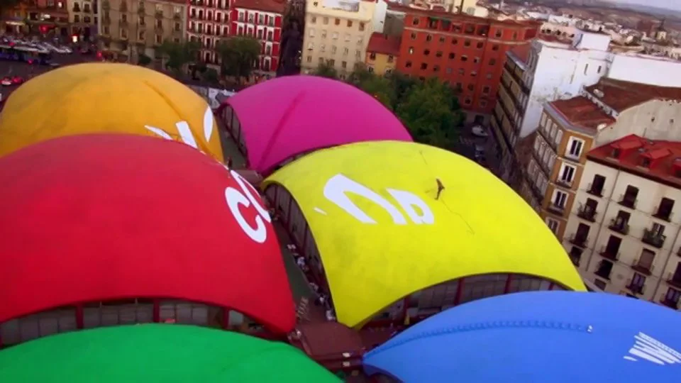
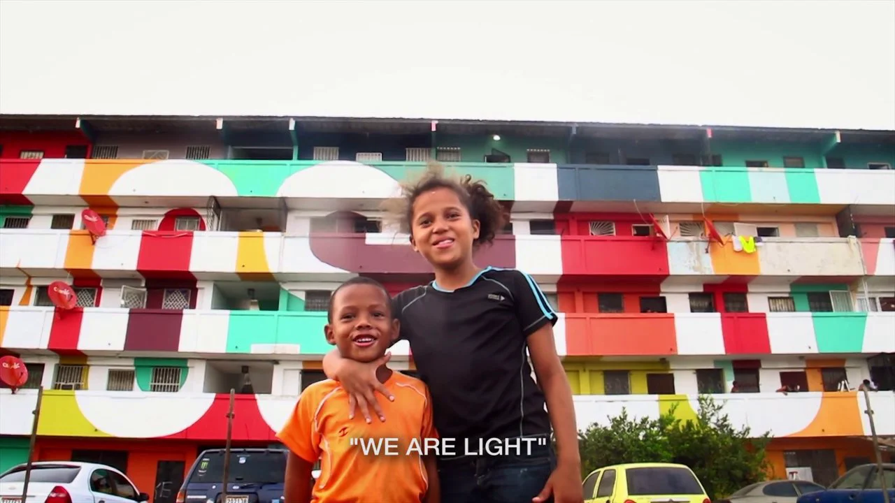
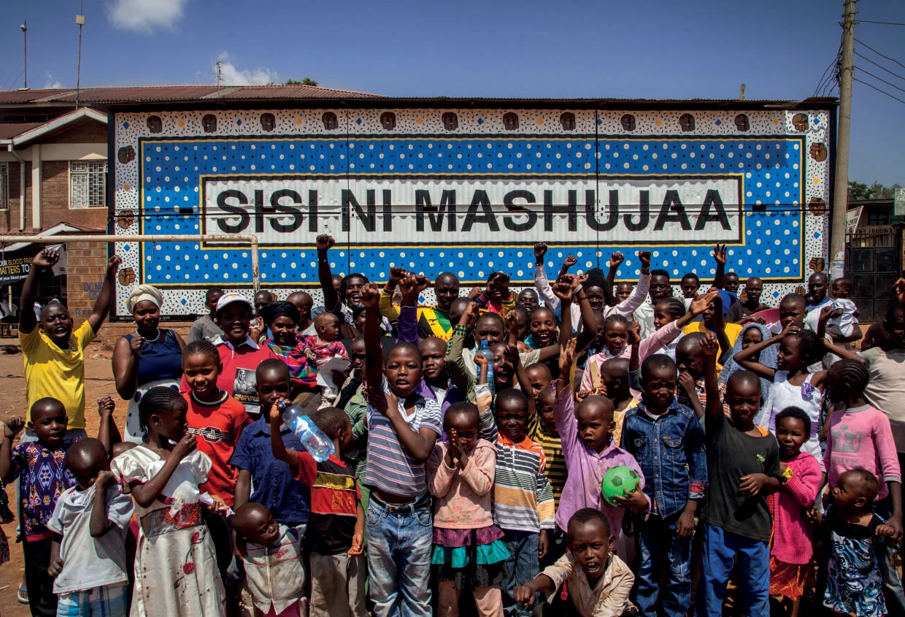
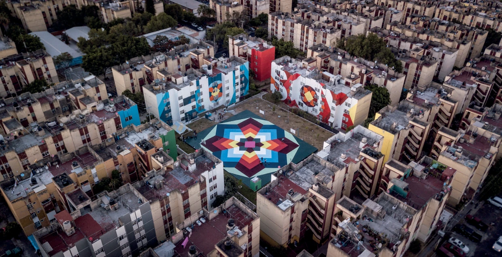

見るポイント
手前から奥へ色の帯をたどると、セーターの編み目に似た段々の模様が現れます。移動させた車止めも帯の上に並び、広場一面が大きな敷物のように見えます。
作品・制作の例9件を紹介しています。図版で紹介する作品は5作品。実作品図版5点、AAGA模写（Runway制作）0点。
グラフィックと建築をつなぐ表現・潮流
Supergraphics
色や文字が、壁いっぱいに広がります。
建物の角を曲がると、形の見え方も変わります。
歩く人の目線で、建物と絵のつながりを見てみましょう。
実作品を見る

画像を表示できませんでした。下の出典ページで確認できます。
ボア・ミストゥラ（Boa Mistura） / 2011
アスファルトの広場と花こう岩の車止めを使った空間グラフィック ／ 制作地はノルウェー、ハーマル市のストールトルゲット広場。広場の再整備に先立つ仮設作品。
手前から奥へ色の帯をたどると、セーターの編み目に似た段々の模様が現れます。移動させた車止めも帯の上に並び、広場一面が大きな敷物のように見えます。
高く評価された事例。オスロの国立美術館で広場の参加型設計を紹介した際、この床の模様を展示室の壁と床にも展開しました。
作品 Boa Mistura。論文の写真に個人の撮影者名はありません。プロジェクトの図版提供はエコシステマ・ウルバノ。 出典 Javier Serrano Guerra、Juan Jaume Fernández、Pablo Ferreiro Mederos、Pablo Purón Carrillo（Boa Mistura）「Art as a tool for change」The Journal of Public Space 第3巻第2号（2018年）32頁。CC BY-NC 4.0。
出典で作品・資料を見る ↗CC BY-NC 4.0（表示・非営利 4.0 国際）
作者が自作を紹介した2018年の論文に付した CC BY-NC 4.0 により、この図版を出典と利用条件を添えて非営利で掲載します。
論文とその掲載図版は CC BY-NC 4.0。誌面の写真を全画面のまま抜き出し、ウェブ表示用に形式を変えています。
出典先の原画像を開く ↗作品・図版の関連資料 ↗画像の利用条件 ↗写真の全画面を使い、色を画面表示用に変換してWebPに保存しました。縮小版も画面の縦横比を保っています。
実作品を見る

画像を表示できませんでした。下の出典ページで確認できます。
ボア・ミストゥラ（Boa Mistura） / 2013
市場の丸屋根と外壁に描いた文字 ／ 制作地はスペイン、マドリード市ラ・ラティーナ地区のセバダ市場。
白い線や弧は、それぞれ違う丸屋根に描かれています。決まった位置から眺めると五つの文字がつながり、スペイン語で「色」を意味する COLOR の一語になります。
広く知られた作品。スペイン版『アーキテクチュラル・ダイジェスト』は、市場の丸屋根を作者たちの代表作の一つとして紹介しました。
作品・記録映像 Boa Mistura。図版は作者がVimeoで公開した作品紹介の静止画。個人の撮影者名はこの図版に記されていません。CC BY-NC-ND 3.0（表示・非営利・改変禁止）。
出典で作品・資料を見る ↗CC BY-NC-ND 3.0（表示・非営利・改変禁止）
作者が自作を記録して公開した公式映像の静止画を、作者名と指定の利用条件を添えて非営利で掲載します。
公式の静止画に指定された CC BY-NC-ND 3.0（表示・非営利・改変禁止） を適用。元画像をそのまま掲載し、一覧用に縦横比を保った縮小版を用意しました。
出典先の原画像を開く ↗作品・図版の関連資料 ↗画像の利用条件 ↗本図は配信元の画像と同一です。縮小版は切り抜かず、縦横比を保っています。
実作品を見る

画像を表示できませんでした。下の出典ページで確認できます。
ボア・ミストゥラ（Boa Mistura） / 2013
集合住宅の外壁、共用廊下、階段室に描いた文字と色面 ／ 制作地はパナマ市エル・チョリージョ地区、ベゴニアⅠ集合住宅。住民が制作に参加しました。
大きな白い文字を目で追うと、一つの文字がいくつもの住戸にまたがっています。廊下に立つ住人の目には、建物全体で読める言葉が身近な色の帯に変わります。
研究の蓄積がある作品。パナマのビエンナーレで制作され、デザイン研究誌『EME』が、建物に展開するスーパーグラフィックスの事例として取り上げています。
作品・記録映像 Boa Mistura。図版は作者がVimeoで公開した作品紹介の静止画。個人の撮影者名はこの図版に記されていません。CC BY-NC-SA 3.0（表示・非営利・継承）。
出典で作品・資料を見る ↗CC BY-NC-SA 3.0（表示・非営利・継承）
作者が自作を記録して公開した公式映像の静止画を、作者名と指定の利用条件を添えて非営利で掲載します。
公式の静止画に指定された CC BY-NC-SA 3.0（表示・非営利・継承） を適用。元画像をそのまま掲載し、一覧用に縦横比を保った縮小版を用意しました。
出典先の原画像を開く ↗作品・図版の関連資料 ↗画像の利用条件 ↗本図は配信元の画像と同一です。縮小版は切り抜かず、縦横比を保っています。
実作品を見る

画像を表示できませんでした。下の出典ページで確認できます。
ボア・ミストゥラ（Boa Mistura） / 2016
六つのコンテナの波板にエナメル塗料で描いた文字と模様 ／ 制作地はケニア、ナイロビ市キベラ地区、ライニ・サバ広場に面したAMREFの診療施設。
東アフリカの布「レソ」には、縁の模様とともに短い言葉が織り込まれたり印刷されたりします。ここでは診療施設の壁全体を一枚の布に見立て、スワヒリ語で「私たちは英雄」と記しました。
代表作。作者が公共空間での制作を振り返った論文で、地域の布の模様と病院の建物を結び付けた事例として一章を割いています。
作品 Boa Mistura。撮影 Boa Mistura。 出典 Javier Serrano Guerra、Juan Jaume Fernández、Pablo Ferreiro Mederos、Pablo Purón Carrillo（Boa Mistura）「Art as a tool for change」The Journal of Public Space 第3巻第2号（2018年）28頁。CC BY-NC 4.0。
出典で作品・資料を見る ↗CC BY-NC 4.0（表示・非営利 4.0 国際）
作者が自作を紹介した2018年の論文に付した CC BY-NC 4.0 により、この図版を出典と利用条件を添えて非営利で掲載します。
論文とその掲載図版は CC BY-NC 4.0。誌面の写真を全画面のまま抜き出し、ウェブ表示用に形式を変えています。
出典先の原画像を開く ↗作品・図版の関連資料 ↗画像の利用条件 ↗写真の全画面を使い、色を画面表示用に変換してWebPに保存しました。縮小版も画面の縦横比を保っています。
実作品を見る

画像を表示できませんでした。下の出典ページで確認できます。
ボア・ミストゥラ（Boa Mistura） / 2017
団地の外壁と広場に水性塗料で描いた文字と幾何学模様 ／ 制作地はメキシコ、グアダラハラ市のインフォナビット・インデペンデンシア住宅団地。住民と大学生が制作に参加しました。
広場の中央にある重なった菱形から、建物の足元へ目を移してみてください。地面の模様と壁の文字が出合い、広場を囲む三つの面に「かつての私」「今の私」「未来の私」にあたるスペイン語が現れます。
代表作。作者が公式サイトの主要作に選んでいます。住民投票で図案を決め、グアダラハラ国際ブックフェアに合わせて制作しました。
作品 Boa Mistura。プロジェクトの空撮 M. A. Productions（Miguel Azanza、作者公式資料に記載）。 出典 Javier Serrano Guerra、Juan Jaume Fernández、Pablo Ferreiro Mederos、Pablo Purón Carrillo（Boa Mistura）「Art as a tool for change」The Journal of Public Space 第3巻第2号（2018年）21頁。CC BY-NC 4.0。
出典で作品・資料を見る ↗CC BY-NC 4.0（表示・非営利 4.0 国際）
作者が自作を紹介した2018年の論文に付した CC BY-NC 4.0 により、この図版を出典と利用条件を添えて非営利で掲載します。
論文とその掲載図版は CC BY-NC 4.0。誌面の写真を全画面のまま抜き出し、ウェブ表示用に形式を変えています。
出典先の原画像を開く ↗作品・図版の関連資料 ↗画像の利用条件 ↗写真の全画面を使い、色を画面表示用に変換してWebPに保存しました。縮小版も画面の縦横比を保っています。
室内・壁面グラフィック
建物の更衣室に大きな図形を展開した、初期の重要な例。紙から空間へ広がるデザインを考えます。
作品・資料の出典を見る ↗作品名（出典表記）：Moonraker Athletic Center, The Sea Ranch：室内のスーパーグラフィックス
Barbara Stauffacher Solomon（バーバラ・スタウファッハー・ソロモン） / 1960年代半ば（サンフランシスコ近代美術館は1965年と記載） / 室内・壁面グラフィック
アスファルトの広場と花こう岩の車止めを使った空間グラフィック
手前から奥へ色の帯をたどると、セーターの編み目に似た段々の模様が現れます。移動させた車止めも帯の上に並び、広場一面が大きな敷物のように見えます。
作品・資料の出典を見る ↗原題：Dream Hamar (PaintHamar)
ボア・ミストゥラ（Boa Mistura） / 2011 / アスファルトの広場と花こう岩の車止めを使った空間グラフィック
市場の丸屋根と外壁に描いた文字
白い線や弧は、それぞれ違う丸屋根に描かれています。決まった位置から眺めると五つの文字がつながり、スペイン語で「色」を意味する COLOR の一語になります。
作品・資料の出典を見る ↗原題：COLOR, Mercado de la Cebada
ボア・ミストゥラ（Boa Mistura） / 2013 / 市場の丸屋根と外壁に描いた文字
集合住宅の外壁、共用廊下、階段室に描いた文字と色面
大きな白い文字を目で追うと、一つの文字がいくつもの住戸にまたがっています。廊下に立つ住人の目には、建物全体で読める言葉が身近な色の帯に変わります。
作品・資料の出典を見る ↗原題：Somos Luz
ボア・ミストゥラ（Boa Mistura） / 2013 / 集合住宅の外壁、共用廊下、階段室に描いた文字と色面
六つのコンテナの波板にエナメル塗料で描いた文字と模様
東アフリカの布「レソ」には、縁の模様とともに短い言葉が織り込まれたり印刷されたりします。ここでは診療施設の壁全体を一枚の布に見立て、スワヒリ語で「私たちは英雄」と記しました。
作品・資料の出典を見る ↗原題：Sisi Ni Mashujaa
ボア・ミストゥラ（Boa Mistura） / 2016 / 六つのコンテナの波板にエナメル塗料で描いた文字と模様
団地の外壁と広場に水性塗料で描いた文字と幾何学模様
広場の中央にある重なった菱形から、建物の足元へ目を移してみてください。地面の模様と壁の文字が出合い、広場を囲む三つの面に「かつての私」「今の私」「未来の私」にあたるスペイン語が現れます。
作品・資料の出典を見る ↗原題：Nierika
ボア・ミストゥラ（Boa Mistura） / 2017 / 団地の外壁と広場に水性塗料で描いた文字と幾何学模様
美術館の壁面・空間のための作品
バークレー美術館・パシフィック映画資料館の大きな壁から隣の展示室の入口へ続く作品。後年も建物との関係を考え続けた例です。
作品・資料の出典を見る ↗作品名（出典表記）：Land(e)scape 2018（ランドスケープ2018）
Barbara Stauffacher Solomon（バーバラ・スタウファッハー・ソロモン） / 2018年 / 美術館の壁面・空間のための作品
展覧会の室内・壁面グラフィック
パームスプリングス美術館の展覧会で新たに設計された室内作品。作者の設計と、実際に壁へ描く仕事を分けて見る例です。
作品・資料の出典を見る ↗作品名（出典表記）：Breaking all the Rules展のための室内スーパーグラフィック
Barbara Stauffacher Solomon（バーバラ・スタウファッハー・ソロモン、設計）／McCann Sign Company（マッキャン・サイン・カンパニー）（壁面への制作） / 2019年 / 展覧会の室内・壁面グラフィック
美術館の壁・天井に広がるグラフィック
サンフランシスコ近代美術館の古い建物の縞模様と、後から増えた空間を結びつける仕事。赤い斜め線やオーケーを表す「OK」の文字が、建物に入る人を迎えます。
作品・資料の出典を見る ↗作品名（出典表記）：Strips of Stripes（ストリップス・オブ・ストライプス）
Barbara Stauffacher Solomon（バーバラ・スタウファッハー・ソロモン） / 2023年 / 美術館の壁・天井に広がるグラフィック
ソロモンは、カリフォルニアのシーランチで、建物の室内に大きな図形を描きました。
紙の上で学んだ文字や形の組み立て方が、歩いて体験する場所へ広がったのです。
ここでは、一人の作者の初期の仕事と後年の仕事を比べます。
スーパーグラフィックス全体が一つの団体だった、あるいは大きな壁画ならすべて同じ流れだ、という意味ではありません。
強い色と白い壁の関係を見ます。色の境目が、部屋の区切りと同じ所にあるかも確かめましょう。
文字や矢印は、言葉を読むものでもあり、空間の中で目立つ形でもあります。何を伝えるために置かれたかを考えます。
壁の角、扉、天井と図形の関係を見ます。平らな紙の作品と違い、立つ場所で見え方が変わります。
一枚の写真に収まる形だけでなく、入る、曲がる、近づくという人の動きに沿って考えます。これは観察のための問いです。
環境グラフィックは、案内表示などを含む、場所と情報をつなぐ広い分野です。スーパーグラフィックスは、その中でも建築の大きさに広がる色や形に注目して考えられます。ただし、すべてが道案内の役割を持つわけではありません。
部屋の写真に、取り外せる色紙を置くつもりで線を描いてみましょう。線を壁の角で止める場合と、隣の壁へつなぐ場合で、広さの感じ方が変わるでしょうか。本物の壁に描くときは、持ち主の許可が必要です。
ソロモンが米国で手がけた作品に加え、ボア・ミストゥラが市場、集合住宅、診療所、広場で色と文字を使った例を紹介します。立つ位置が変わると、建物にまたがる形がどう見えるかに注目してください。
作品・制作の例9件を紹介しています。図版で紹介する作品は5作品。実作品図版5点、AAGA模写（Runway制作）0点。